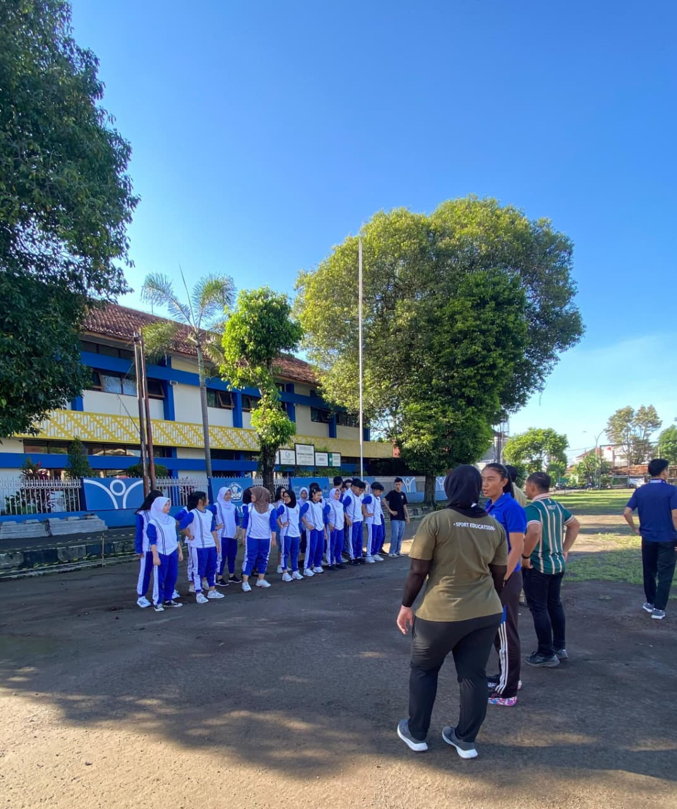

E-Portofolio
E-Portofolio
Mitra Inovasi
Pendidikan Jasmani
Masa Depan
Transformasi diri menjadi pendidik PJOK profesional masa depan melalui refleksi mendalam, penguasaan pedagogik keolahragaan modern, dan pembelajaran aktif yang menyenangkan.

Berakar Integritas,
Tumbuh Melalui Inovasi
Saya adalah calon pendidik profesional bidang Pendidikan Jasmani, Olahraga, dan Kesehatan (PJOK) yang berdedikasi menciptakan pembelajaran gerak yang bermakna, menyenangkan, inklusif, dan berpusat pada peserta didik.
Berlandaskan filosofi pendidikan Ki Hadjar Dewantara, saya memandang pendidikan jasmani sebagai wahana holistik yang memadukan olah rasa, olah pikir, olah raga, dan olah karsa. Melalui perkuliahan PPG Calon Guru di Universitas Negeri Yogyakarta serta praktik langsung di sekolah mitra, saya mengasah kemampuan perancangan pembelajaran berdiferensiasi, asesmen motorik, dan pembinaan karakter sportivitas peserta didik.
Keahlian &
Kompetensi Teruji
Rangkaian penguasaan pedagogik keolahragaan, kurikulum PJOK adaptif, dan penerapan pembelajaran gerak yang teruji di lingkungan pendidikan nyata.
Filosofi & Karakter Peserta Didik

Membangun fondasi pemikiran kritis Ki Hadjar Dewantara, asesmen diagnostik kesiapan fisik & motorik, serta penyesuaian materi gerak berbasis keragaman siswa.
Praktik Pembelajaran PJOK di Sekolah Mitra

Implementasi modul ajar PJOK berdiferensiasi, manajemen keselamatan aktivitas fisik, dan pengelolaan dinamika kelas olahraga bersama bimbingan Guru Pamong dan DPL.
Pembelajaran Sosial Emosional (PSE)

Mengintegrasikan 5 kompetensi CASEL, sportivitas, disiplin diri, empati, dan kerja sama tim dalam berbagai aktivitas fisik dan permainan olahraga.
Inovasi Media & Asesmen Gerak PJOK

Pemanfaatan media visual interaktif, asesmen digital unjuk kerja gerak, dan modifikasi permainan olahraga yang inklusif untuk semua siswa.
Daftar Karya &
Refleksi Pembelajaran
Koleksi artefak pembelajaran, perangkat ajar PJOK, refleksi perkuliahan, dan inovasi pendidikan jasmani yang dihasilkan selama program PPG.
Daftar Mata Kuliah
Semester 1 & Semester 2
Rangkaian program perkuliahan dan praktik klinis Program PPG Calon Guru Bidang Studi PJOK untuk membentuk pendidik profesional yang berdaya saing global dan berkarakter budi pekerti.
Filosofi Pendidikan dan Pendidikan Nilai
Memahami landasan filosofis pendidikan serta pentingnya nilai dalam proses pendidikan sebagai dasar dalam membentuk pembelajaran.
Pembelajaran Mendalam dan Asesmen Dasar
Mempelajari konsep pembelajaran mendalam serta dasar-dasar asesmen perkembangan dan capaian belajar peserta didik.
Pemahaman Tentang Peserta Didik
Memahami karakteristik, kebutuhan, potensi, dan keberagaman peserta didik sebagai dasar merancang pembelajaran.
Pembelajaran Kreatif Inovatif
Mengembangkan kemampuan dalam merancang pembelajaran yang kreatif, inovatif, dan menarik.
Pola Berpikir Bertumbuh
Membangun pola pikir bertumbuh dalam menghadapi proses belajar, tantangan, dan kesalahan.
PPL Terbimbing
Memperoleh pengalaman awal dalam melaksanakan praktik pembelajaran dengan bimbingan dan evaluasi.
Pembelajaran Sosial Emosional
Memahami pentingnya pengembangan kompetensi sosial dan emosional dalam menciptakan lingkungan yang positif.
Pembelajaran Mendalam dan Asesmen Lanjut
Memperdalam penerapan pembelajaran mendalam dan asesmen untuk mendukung proses pembelajaran yang bermakna.
Projek Kepemimpinan
Mengembangkan kemampuan kepemimpinan melalui perencanaan dan kolaborasi menyelesaikan permasalahan nyata.
Pengembangan Keprofesian Berkelanjutan
Memahami pentingnya pengembangan kompetensi secara berkelanjutan melalui refleksi dan pembelajaran profesional.
PPL Mandiri
Mengimplementasikan kompetensi secara mandiri mulai dari perencanaan, pelaksanaan, hingga refleksi.
"Menjadi pendidik PJOK bukan sekadar melatih fisik dan keterampilan gerak olah tubuh, melainkan menyalakan sportivitas, ketahanan mental, literasi gerak sepanjang hayat, serta menumbuhkan budi pekerti luhur bagi setiap peserta didik."